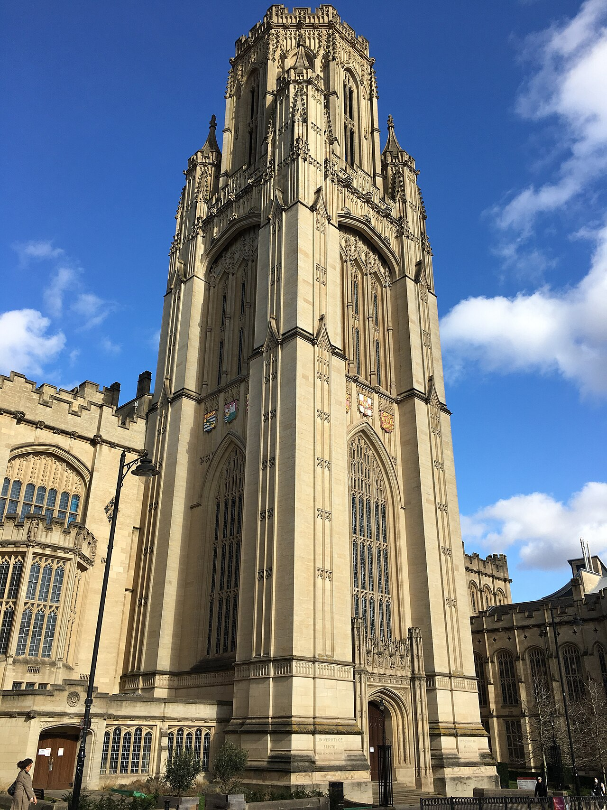
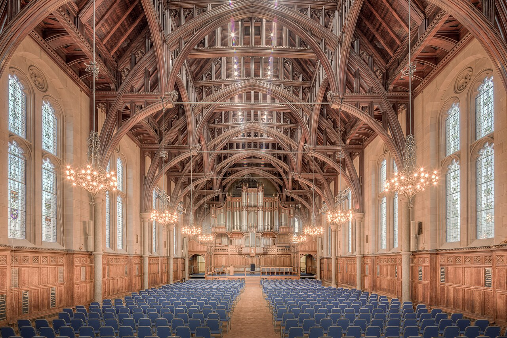

把选择的理由，
看得更清楚。
从六条英国硕士路线出发，把官方资料、个人判断与未来期待放在同一张桌上。调节权重，让选择更接近你。


公开网站无需登录。每个人都可自行调整权重和名次，设置保存在各自浏览器；分享方案链接可传递当前设置。
六条路线，现在这样排
加权平均名次 · 越小越优你正在重视什么
结果是情景，不是保证
怎么算的？哪些地方还不确定？＋
加权平均名次 = Σ（单项名次 × 该项权重）。例如两项各50%，某校分别第1和第3，则平均名次为2。并列按占用位置取平均；最终同分保留并列。
名次只保留先后，不表达差距大小。指标拆分也会改变实际权重：生活拆成四项并各占10%，实际就是40%。初始名次来自之前的讨论，不是官方排名、就业率或毕业率。
难度、毕业、留英及个人匹配尤其包含主观判断。考核资料不完整的格子标有「待核」；中间名次是情景占位，不能理解为已证明难度中等。请结合正式项目名称、offer及2027/28考核手册调整。
八项与十项使用各自的历史名次矩阵，切换同时改变指标与初始判断，因此两模式差异不能全部归因于权重。各模式的个人修改会分别保存。
本工具不按学术录取门槛排除学校；费用不设60万元硬上限；允许补考补交，关注额外学年风险。行政出证时间不作为毕业红线。
你也可以修改判断本身。
1 表示更有利，6 表示更不利。修改后点击应用，整行会按相对顺序整理，并列取平均名次。
「待核」表示考核或毕业依据不完整。所有其他名次也属于可修改的咨询判断，不代表就业、毕业或政策结果已被证实。
名次之外，看看每条路的样子。
官方学费与语言条件直接链接原文。校园影像用于认识学校，并非承诺的2027教室或住宿实景。
一年总额按 £1 = ¥9 的规划情景，含学费、12个月生活及约£3,000必要杂项；语言班与毕业后求职资金另计。生活方式、汇率和房源会改变实际费用，以上不是学校报价。部分语言班仅有旧年价格。
留英、回国与学位安排
按现行规则，2027年起申请普通硕士Graduate visa通常为18个月；长期留英仍需要满足工作及签证条件。KCL公告计划2027年8月1日合并，学位证安排按接受offer时点等条件核对；Cranfield实际学习地点仍为Cranfield。成都落户与人才补贴按实际毕业及回国年份确认，未计入预算。
每条信息，都能找到它的来处。
资料支持事实，名次表达判断。原文链接、适用年份和资料边界一起保留。
另有6组图片署名
校园影像与原图署名
图片来自Wikimedia Commons，按版式裁切显示。点击原图页核对作者与许可；历史影像不代表2027设施状态。